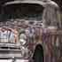
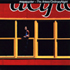
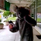
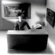
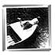

| Pic // | Name // | In Brief // |
|

| Decoupage Car | I decoupage old cars that I drive all over town (Adelaide). |
|
| The pink panda | Wanna see some of my artwork? |
|
| Jasmine Lee and Halogen, WA band. | Check out Halogen's track 'quiet/loud' on MP3. |
|

| Maya Jupiter, Hip Hop MC. | Check out Maya Jupiter's new single 'Ordinary Night' on MP3. |
|
| Erica Hardwick, producer. | Great tv is tv without the cheesy ads. |
|
| Adnan Lalani and Peter Cossey, film makers. | Adnan (Hulk) Lalani and Peter (Spidey) Cossey... |
|

| Nikki Michail, film maker | I do what I do cause it's the thing I find fulfilling. |
|
| Dean Wells, film maker. | Dean's work features in the Saturday 13th October edition of ABC's noise tv, 10.30 am - 11.30 am, repeated Saturday night before 'Rage'. |
|

| Pierce Davison,film maker | Pierce Davison, animator extraordinaire. |
|
| Pierce Davison's 'The Cows Side'. | Watch an excerpt from Pierce Davison's short animation 'The Cows Side'. |
|
| Jen Lowe | I recently made a special brand of hyper-optic-design.. |
|
| Culture Connect | Check out our track 'Blu Funk' here on MP3. |

| Luke Dove, 'The Drummer'. | I'm studying professional screenwriting at RMIT and I like it lots. I live with my brothers in a shack in Preston. I love supermarkets, and I really want to sleep over in a K Mart store one day. |
|
| Matthias Cerwen, 'A Simple Solution' | 'A Simple Solution' focuses on Flame, a 20 something arts student.. |
|

| Elissa Down, 'HMAS Unicorn' | 'In the summer of 1964, three incidents took place on Lake Grace. |